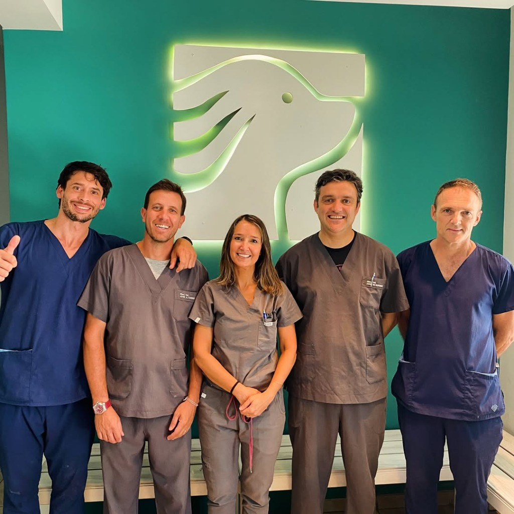
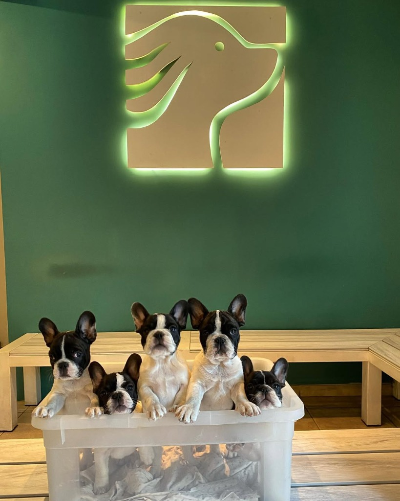
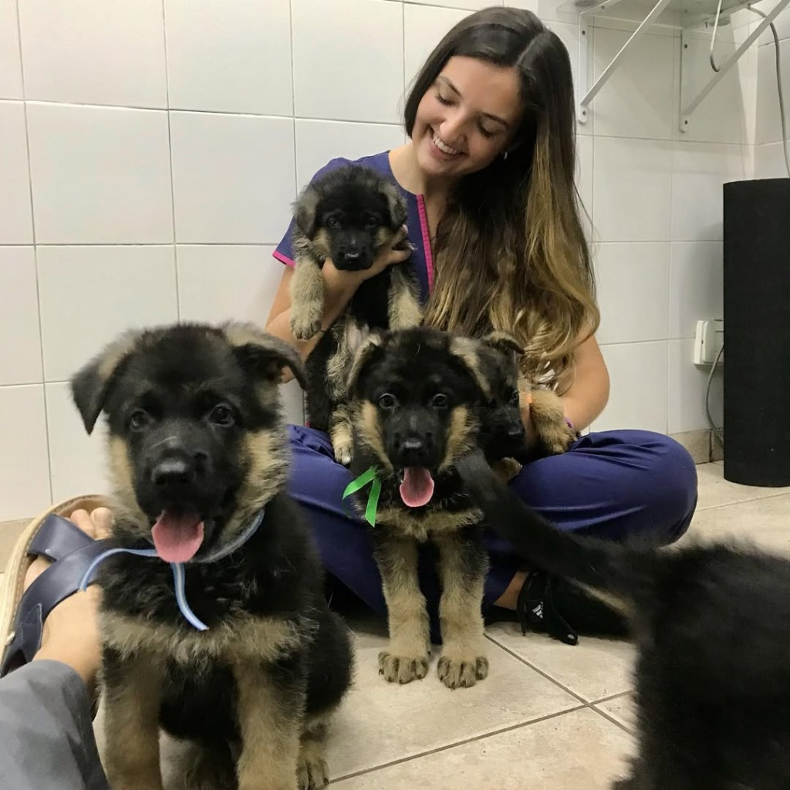

En Clínica Veterinaria Sandaza combinamos tecnología médica de vanguardia con un trato profundamente empático, cuidando a tu mascota en cada etapa de su vida en Santa Fe.



Elige el especialista, la fecha y el horario de forma cómoda y sin esperas telefónicas.
Solicitar onlineGenera una credencial 3D interactiva para tu mascota y accede a su calendario inteligente de salud.
Acceder al portalLlama directamente o consulta nuestro protocolo para recibir atención prioritaria inmediata.
Llamar ahoraRegistra los datos de tu compañero de vida, obtén su credencial 3D de salud y recibe un plan médico y consejos adaptados dinámicamente.
Tipo: Perro | Edad: -
Evita demoras telefónicas. Pre-reserva el turno para tu mascota de forma simple y te enviaremos una confirmación de prioridad.
Tu solicitud de turno ha sido procesada con éxito. En breve un coordinador de la clínica se comunicará contigo al teléfono provisto para ratificar el horario exacto.
El portal asigna de forma directa las franjas horarias libres de nuestros cardiólogos y cirujanos.
Los turnos se vinculan de forma directa con la credencial digital de tu mascota en nuestro sistema.
Si es un caso de urgencia, al finalizar el formulario el sistema te guiará directamente con el personal de guardia activa.
Pequeños hábitos cotidianos que marcan una gran diferencia en la calidad de vida y longevidad de tu mascota.
Profesionales altamente capacitados en prestigiosas universidades nacionales e internacionales, garantizando diagnósticos certeros.
Graduada de la **UNL (Univ. Nac. del Litoral)** y especialista posgrado por la **UAB (Universidad Autónoma de Barcelona)**, España.
Graduado de la **UNL** en Medicina de Pequeños Animales, experto en Radiología Digital e Imagenología Doppler Avanzada.
Veterinaria egresada de la **UNL** con residencia clínica especializada en arritmias y cardiomiopatías felinas/caninas.
Nuestra clínica está ubicada en una de las avenidas más emblemáticas de Santa Fe Capital, con fácil acceso y estacionamiento.
Avenida General López 2957, Santa Fe, Argentina.
Lunes a Sábado de 08:00 a 19:00 hs (Guardia pasiva telefónica fuera de horario).
0342 458-1515 | Emergencias directas al mismo número.